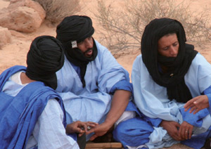

Le hassaniya est un dialecte arabe parlé au Sahara marocain. Sur une aire géographique étendue, elle constitue la langue maternelle d’une population vivant de Oued Noun au Sud du Maroc au fleuve du Sénégal au Sud de la Mauritanie. À l’origine dialecte des Bédouins, le hassaniya se distingue par divers traits phonétiques et morphologiques. Malgré l’entendue de l’aire géographique sur laquelle il est parlé, le hassaniya présente une grande unité et s’il existe des différences c’est essentiellement au niveau du lexique. Les locuteurs de la hassaniya l’appelle “Klam Al Bidhane” (parler des Blancs) dialecte des bidane) pour la distinguer des autres dialectes notamment berbères ou autres. Selon l’ouvrage “Al Wassit” de Ahmed Amine Chenguiti, “le hassaniya est un mélange de l’arabe classique mixée par le dialectal. Linguistiquement, le hassanya fait partie des dialectes arabes nomades ou ruraux, que l’on distingue des dialectes citadins ou urbains. Il se caractérise par un dictionnaire riche par les mots et expressions berbères particulièrement dans les domaines de l’agriculture, des herbes médicinales et des noms géographiques. Ceci n’est pas le fruit du hasard puisque les régions qui parlent le dialecte hassani étaient initialement amazighes. L’entrée du dialecte hassani a certes constitué un facteur de changement linguistique crée par les tribus Maakilia et Hilalia par étapes distinctes de l’histoire islamique de l’Afrique du Nord. A l’instar des autres dialectes, le hassaniya connait des divergences au niveau phonétique d’une région à une autre, dont la ,plus importante reste la prononciation de la lettre “Kaf” “Ghine”. A la différence des autres dialectes bédouins de l’Afrique du Nord, le hassaniya a pu maintenir une structure très proche de l’arabe classique.

.jpg)